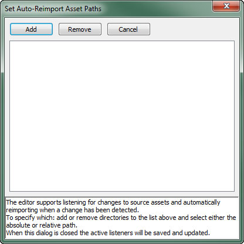
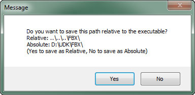
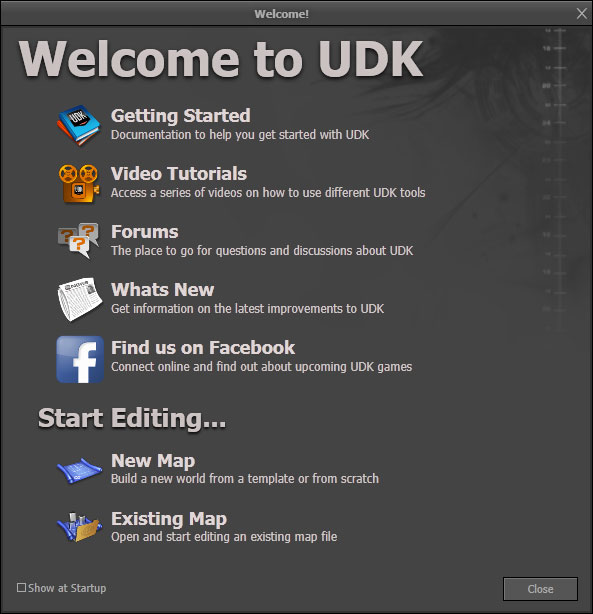
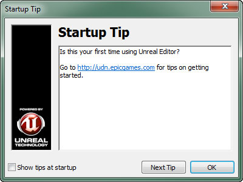
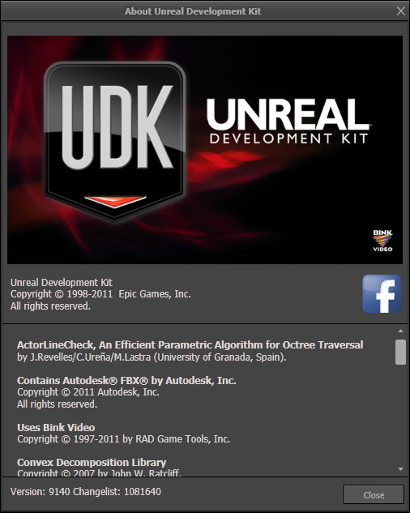

UDN
Search public documentation:
MainEditorMenuBar
日本語訳
中国翻译
한국어
Interested in the Unreal Engine?
Visit the Unreal Technology site.
Looking for jobs and company info?
Check out the Epic games site.
Questions about support via UDN?
Contact the UDN Staff
中国翻译
한국어
Interested in the Unreal Engine?
Visit the Unreal Technology site.
Looking for jobs and company info?
Check out the Epic games site.
Questions about support via UDN?
Contact the UDN Staff
Main Editor Menu Bar
File
- New
- Creates a new map, with the option of building in an additive or subtractive world.
- Open
- Opens an existing map saved on disk.
- Save Current Level
- Saves the current level being edited. If source control is enabled, saving the current level will prompt you to check it out from source control if it is not already checked out. Note: You can find out which level is "current" by looking at the level manager.
- Save As
- Prompts to save the current level with a different filename.
- Save Modified
- Prompts to save every dirty content and map package. A dialog will appear allowing you to select which packages you want to save. If source control is enabled and the selected packages are not checked out, another dialog will appear that will prompt you to check out the packages.
- Save All
- Saves every dirty content and map package without prompting you to select which packages to save. However, if source control is enabled, you will be prompted to check out the packages from source control.
- Save All Writable
- Saves every dirty content and map package that is also writable on disk. Does not prompt for checkout from source control.
- Save All Levels (Force)
- Saves all writable levels, even if they are not dirty. Does not prompt for checkout from source control.
- Switch Renderer
- Switches between supported renderers. Changes require restarting the editor. You will be asked whether to restart and prompted to save any unsaved maps/packages if you choose to restart.
- Import
- Commands for importing map content.
- Into New Map - Creates a new map and imports the content into that map.
- Into Existing Map - Imports the content into the existing map, merging with the existing contents.
- Export
- Commands for exporting map content.
- All - Exports the entire contents of the currently loaded map.
- Selected Only - Exports only the currently selected items.
- Favorites
- Provides a list of maps marked as favorites for quick access.
- Recent
- Provides a list of recently opened maps to choose from and load.
- Exit
- Closes Unreal Editor.
Edit
- Undo
- Undoes the last action in the transaction stack.
- Redo
- Performs the last undone action in the transaction stack.
- Translate
- Enables the translation widget used to move actors around in the map.
- Rotate
- Enables the rotation widget used to rotate actors in the map.
- Scale
- Enables the scale widget used to scale actors in the map.
- Cut
- Places the selected items into the clipboard and removes them from the map.
- Copy
- Places the selected items in the clipboard.
- Paste
- Places the contents of the clipboard into the map.
- Duplicate
- Creates copies of the selected items.
- Delete
- Deletes the selected items.
- Select None
- De-selects all currently selected items.
- Select Builder Brush
- Selects the builder brush.
- Select All
- Selects the entire contents of the map.
- Select by Property
- Selects all items with a property value matching the active property and value. A property can be marked active by Holding Shift and clicking the left mouse button on the property in the Property Window.
- Select Current Post-process Volume
- Selects the PostProcessVolume the viewport camera is currently inside, if any.
- Invert Selection
- Selects all items in the map that are currently not selected.
- Find Actors
- Opens the Search For Actors dialog
View
- Browser Windows
- Opens one of the browser windows.
- Actor Properties
- Opens the Actor Properties Window.
- Surface Properties
- Opens the Surface Properties Window.
- World Properties
- Opens the properties window for the current map’s WorldInfo actor.
- UnrealKismet
- Opens the Kismet editor window.
- UnrealMatinee
- Displays a list of existing matinee sequences in the current map which can be selected to open the Matinee editor for that sequence.
- Drag Grid
- Toggles snapping to the drag grid as well as setting the size of the grid.
- Rotation Grid
- Toggles rotation snapping as well as setting the angle between snapping points.
- Scale Grid
- Toggles scale snapping as well as setting the percentage increments to snap to.
- Change Autosave Options
- Toggles the autosave feature as well as setting the frequency of saves.
- Detail Mode
- Sets the current detail level to show in the viewports.
- Emulate Mobile Features
- Toggles emulation of mobile input and rendering on PC (enables touch-based input, disables gamma correction, certain post-processes, directional light maps, etc.)
- Show Transform Widget
- Toggles the display of the transform widget. When hidden, transformations are effectively disabled unless the legacy transform methods of holding Ctrl, clicking the left mouse button, right mouse button, or both buttons, and dragging the mouse are used.
- Allow Translucent Selection
- Toggles the ability to select geometry with translucent materials applied.
- Allow Group Selection
- Toggles the ability to select actors contained within Actor Groups?.
- Use Strict Box Selection in Ortho Viewports
- Toggles whether objects must be entirely encompassed by the selection box in ortho viewports to be selected.
- Draw Brush Marker Polys
- Toggles the display of translucent marker polygons on the builder brush and volumes.
- Only Load Visible Levels in PIE
- Toggles loading only visible levels in PIE games. Allows you to specify non-visible levels to remain unloaded to better simulate level streaming performance while playing a PIE game.
- Draw Builder Brush
- Toggles drawing of the builder brush’s polygons in the viewport when the builder brush is selected.
- Lock Prefabs from Selection
- Toggles the ability to select the individual actors making up a prefab. When enabled, selecting any of the actors in the prefab will select the entire prefab.
- Enable Socket Snapping
- Toggles the display of sockets and the ability to snap and attach an actor in the viewport to any existing socket on another actor in the viewport.
- Enable Particle System LOD
- Toggles the display of distance-based level of detail for particle systems in the viewports.
- LOD View Locking
- Toggles level of detail locking for viewports. This means all perspective viewports will use the LODs of the active perspective viewport for rendering and orthographic viewports will use a perspective viewport’s origin for calculating LODs.
- Enable Quick ProcBuilding Mode
- Toggles use of quick updates when making changes to ProcBuildings.
- New Floating Viewport
- Creates a new undocked, floating viewport.
- Viewport Configuration
- Changes the number and layout of the viewports in the editor.
- Fullscreen
- Toggles running the editor in fullscreen mode; hides the window’s title bar.
- Lighting Info
- Provides access to several information dialogs regarding various lighting statistics.
Brush
- CSG Add
- Creates a new additive brush from the current builder brush.
- CSG Subtract
- Creates a new subtractive brush from the current builder brush.
- CSG Intersect
- Creates a brush from the intersection of all brushed encompassed by the current builder brush and replaces the builder brush with the new brush.
- CSG Deintersect
- Creates a brush from the deintersection of all brushed encompassed by the current builder brush and replaces the builder brush with the new brush.
- Add Special
- Adds a new special brush using the current builder brush.
- Add Volume
- Adds a new volume using the current builder brush.
- Import
- Imports a brush from a file.
- Export
- Exports a brush to a file.
Build
- Geometry for Current Level
- Rebuilds geometry for the current level only.
- Geometry for Visible Levels
- Rebuilds geometry for all visible levels.
- Lighting
- Opens dialog for rebuilding lighting.
- AI Paths
- Rebuilds AI paths or navigation mesh.
- Selected AI Paths
- Rebuilds only the selected AI paths.
- Build All
- Rebuilds all geometry, lighting, and AI paths.
- Build All (Selected AI Paths)
- Rebuilds all geometry and lighting as well as selected AI paths.
- Build All and Submit to Source Control
- Rebuilds all geometry, lighting, and AI paths and then submits the built levels to the source control (if enabled).
Play
- In Editor
- Loads the map in a Play In Editor game.
- Play In Active Viewport
- Loads the map in a Play In Editor game inside of the currently active viewport.
- Install on iOS Device
- Installs the current map onto any connected iOS devices (devices must also be part of the installed mobile provision). See Play on iOS Device for more information.
- On Mobile Previewer
- Loads the map into a standalone game using simulated mobile input and the OpenGL ES2 rendering pipeline. See Mobile Previewer for more details.
- On PC
- Loads the map into a standalone PC game.
Tools
- Check map for Errors
- Checks the map for errors and opens a dialog showing all errors.
- New Terrain
- Opens the Terrain Wizard dialog for creating new terrain actors.
- Clean BSP Materials
- Removes any unnecessary material references on BSP brushes.
- Replace SkeletalMeshActors
- Description to be added
- Regenerate All ProBuildings
- Rebuilds alls ProcBuildings in the map.
- Regenerate Selected ProBuildings
- Rebuilds only those ProcBuildings that are currently selected in the map.
- Generate All Buildings LOD Textures
- Regenerates the render-to-texture LOD textures to use for all ProcBuildings when viewed from a distance.
- Generate Selected Buildings LOD Textures
- Regenerates the render-to-texture LOD textures to use for the selected ProcBuildings when viewed from a distance.
- [Un]Lock read-only Levels
- Toggles whether levels that are read-only can be modified.
- Set Auto-Reimport Asset Paths
- The editor supports listening for changes to source assets and automatically reimporting when a change has been detected. This opens a dialog that allows you to add or remove directories to be monitored.

You can choose to use either a relative or absolute path.

When the dialog is closed the active listeners will be saved and updated.
Preferences
Help
- Online Help
- Opens the UDN in a browser.
- Online Forums
- Opens the UDK forums page in a browser.
- Setting Up Swarm
- Opens the Swarm UDN document in a browser.
- Show Welcome Screen
- Shows the welcome screen.
 - Display Startup Tip
- Shows the Startup Tips dialog.
 - About
- Displays information about the editor version.
